Una historia de encuentros.
ADN Argentino: De las Raíces al Potencial
La décima edición puso el foco en la identidad argentina y su relación con el desarrollo. Emprendimiento, economía, tecnología, energía y comunicación fueron parte de dos jornadas de intercambio.
- Fecha
- 4 y 5 de abril de 2025
- Sede
- Columbia Business School · Consulado Argentino

Speakers


Sedes


Agenda
Ver documento acá
Sponsors y apoyos


Gold Sponsors

Bronze Sponsor

Apoyaron


Del potencial a la realidad
Un encuentro sobre cómo transformar capacidades individuales en logros compartidos. Los paneles recorrieron experiencias de innovación, desarrollo económico y trabajo en equipo.
- Fecha
- 5 y 6 de abril de 2024
- Sede
- Council of the Americas · Columbia Faculty House
Speakers
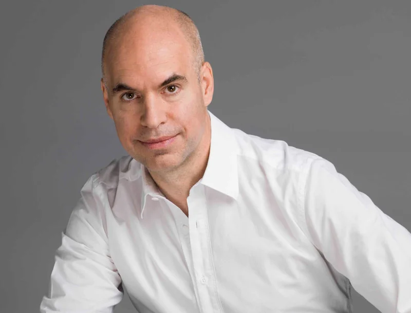
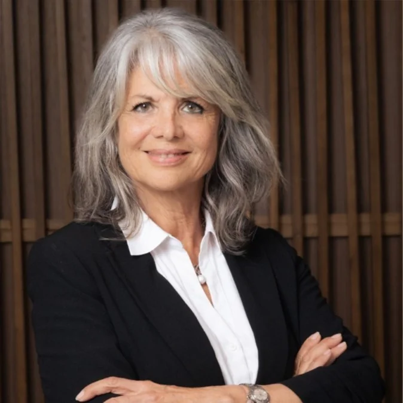
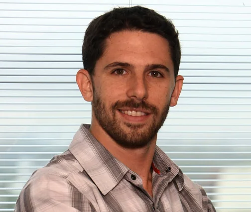
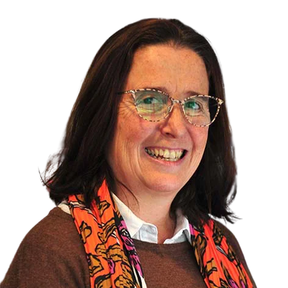
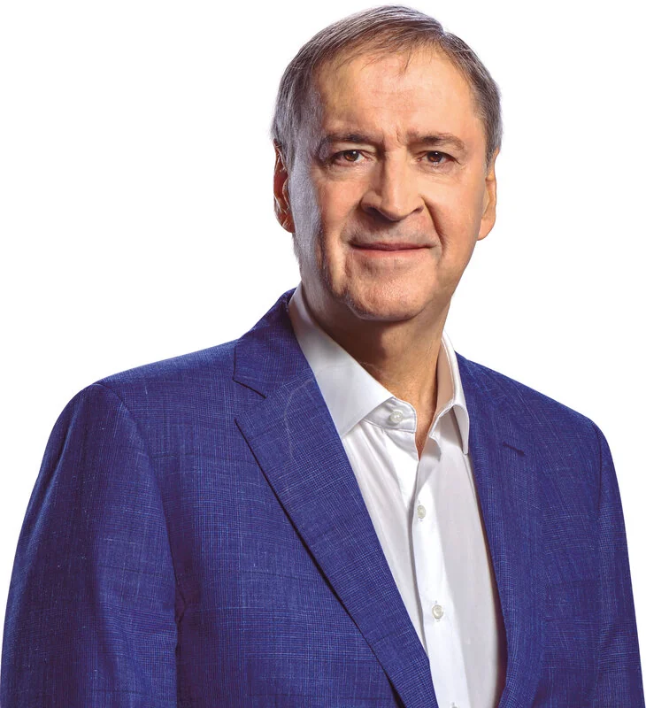
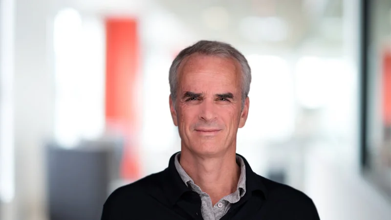
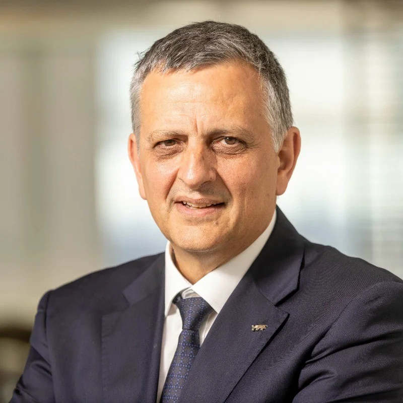
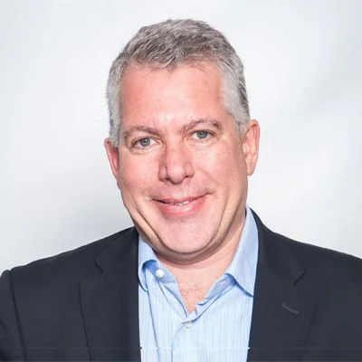
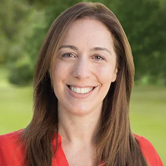
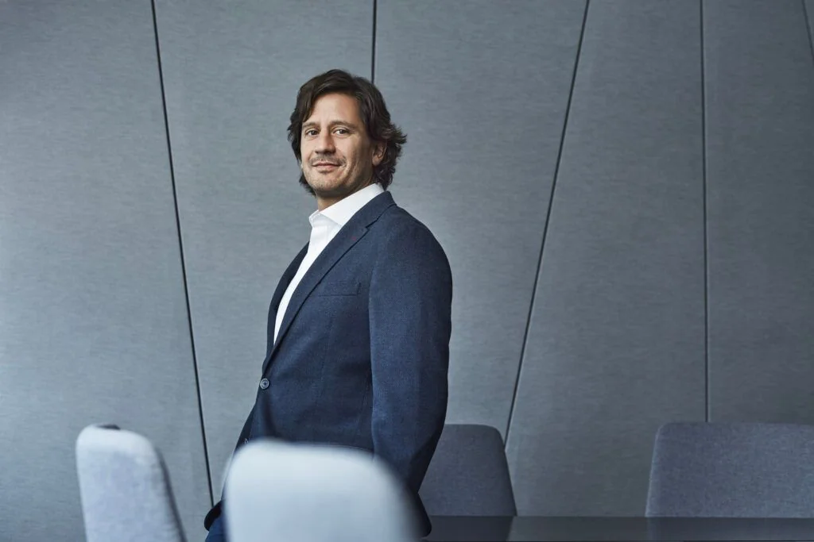
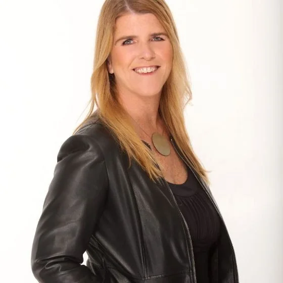
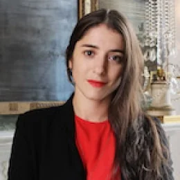
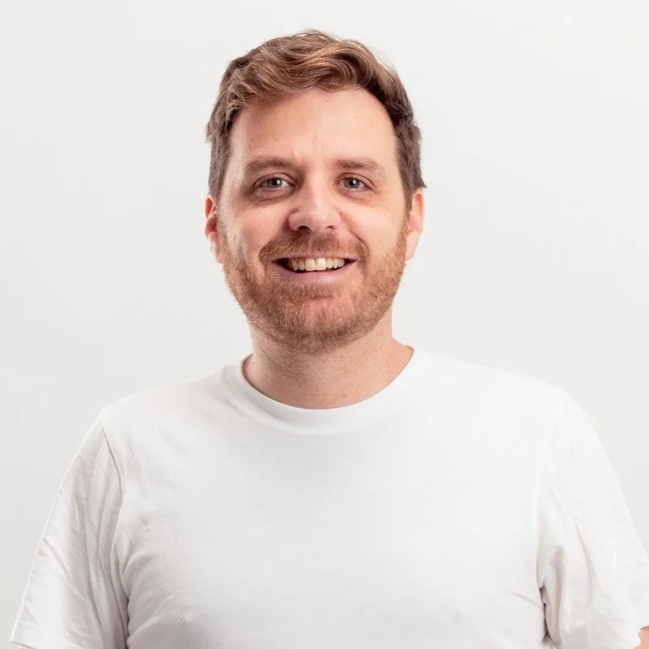
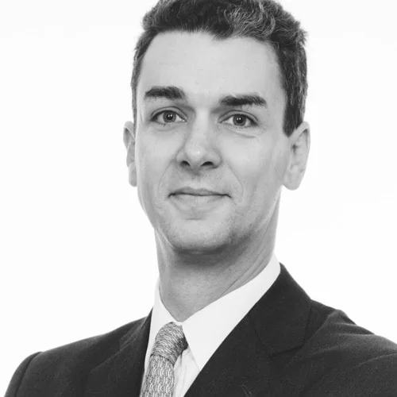
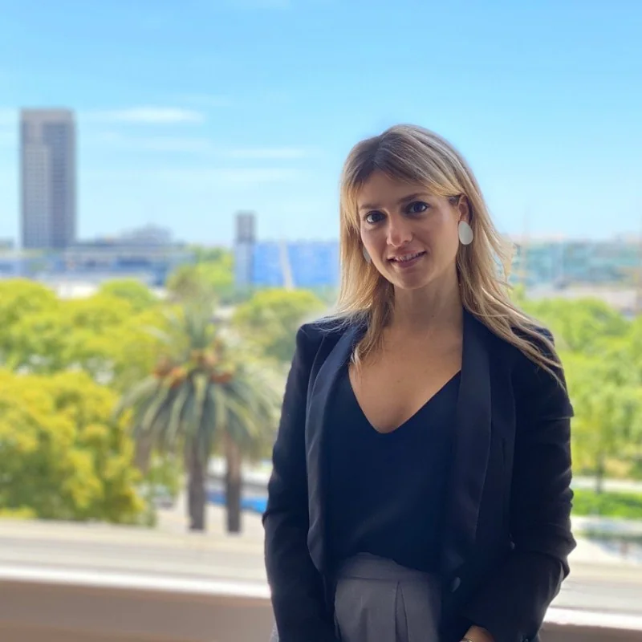
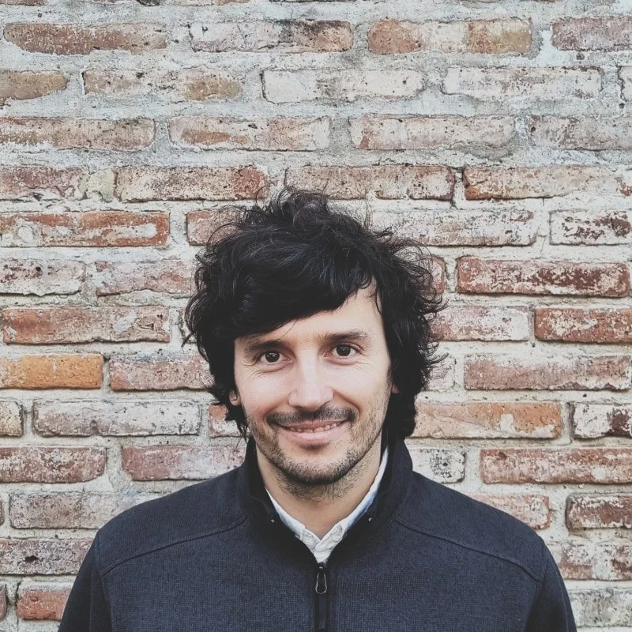
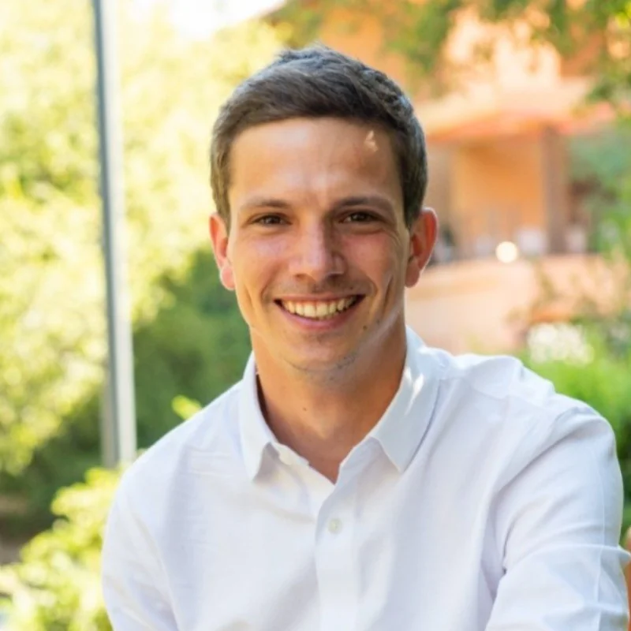
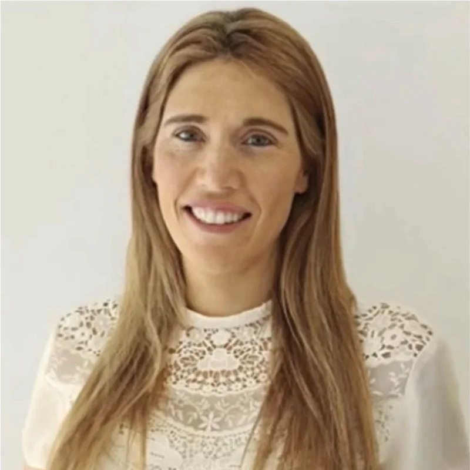

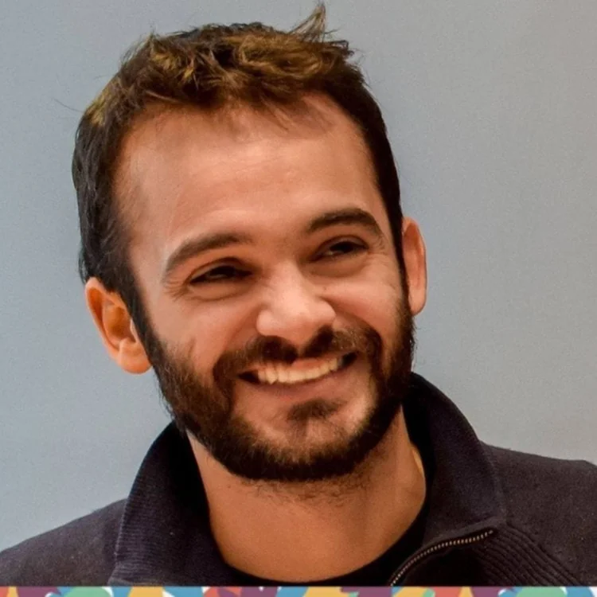
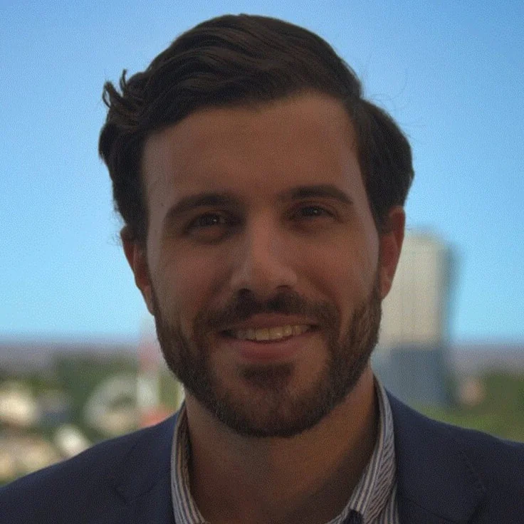
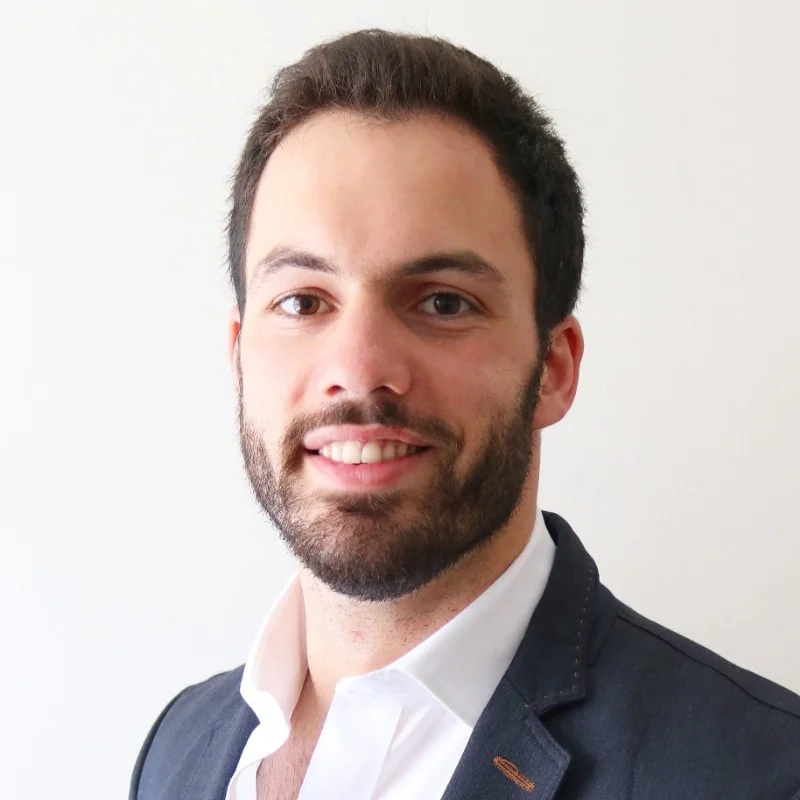
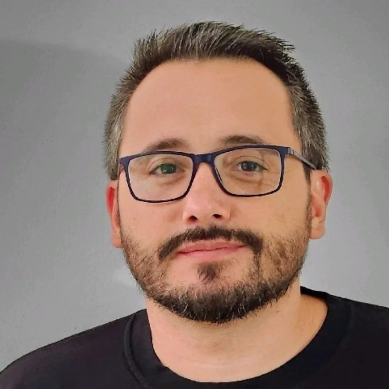
Sedes
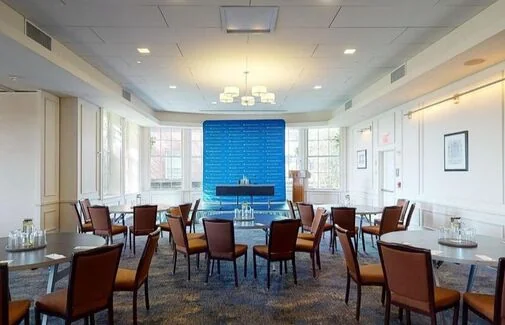
Agenda
Ver documento acá
Sponsors y apoyos
Stop & Go
Una pausa para revisar aprendizajes y pensar los próximos pasos del país. Litio, finanzas, transición política, biotecnología y futuro del trabajo estuvieron en la agenda.
- Fecha
- 15 y 16 de abril de 2023
- Sede
- Columbia Business School · Consulado Argentino · Life Rooftop

Speakers


Sedes


Agenda
El domingo 16 de abril se exploraron los desafíos de la transición política, el capital de riesgo en biotecnología, y el impacto de la tecnología y la demografía en el futuro del trabajo. Estas sesiones brindaron una perspectiva integral sobre el desarrollo económico y social del país, cerrando con un almuerzo de despedida.
Ver documento acá
Sponsors y apoyos


Conversaciones improbables para una Argentina posible
La propuesta fue acercar miradas del ámbito público, empresarial, social y deportivo para conversar sobre los acuerdos que necesita Argentina.
- Fecha
- 8 al 10 de abril de 2022
- Sede
- Chicago Booth · Northwestern Kellogg
Temario y speakers
Conversaciones improbables para una Argentina posible
Speaker: Sergio Kaufman - Presidente de Accenture
Speakers:
- Francisco Ortega - Managing partner LATAM, McKinsey & Company
- Federico Trucco - CEO, Bioceres
- Germán Bassi - Co-founder, Technysis
Speaker: Sergio Affronti - CEO YPF
Los productos de origen agropecuario, incluyendo materias primas como manufacturas, representan el 70% del total de las exportaciones argentinas. De este modo, el agro sigue siendo el principal motor del comercio exterior argentino. Sin embargo, los desafíos del cambio climático y un entorno global cada vez más volátil nos obligan a repensar la producción agropecuaria para garantizar su sustentabilidad en el largo plazo. ¿Qué rol tiene la tecnología, la innovación y el talento argentino en ese contexto?
Speakers:
- Ignacio Lartirigoyen - Presidente, Lartirigoyen
- Enrique López Lecube - CFO, Bioceres
- Federico Vartorelli - Global Head of Breeding Customer Insights, Bayer AG
La segunda década del siglo XXI encuentra a la Argentina sin una visión compartida de futuro y, por ende, diferencias muy marcadas en las políticas de largo plazo. Los consensos, tan necesarios, parecen cada vez más improbables. En ese contexto, la fuerza, perseverancia e innovación de los argentinos conviven hoy con un alto nivel de incertidumbre y preocupación. Algunos jóvenes, incluso, piensan en emigrar, en la búsqueda de estabilidad. ¿Cuáles son los temas en los que debemos alcanzar esos consensos improbables? ¿Cuál es la visión común que sí podemos construir? ¿Cómo invitamos a los jóvenes a que sean parte?
Speakers:
- Alfredo Cornejo - Diputado Nacional por la Provincia de Mendoza
- Patricia Bullrich - Presidente de Pro y ex-Ministra de Seguridad de la Nación
- José Luis Espert - Diputado Nacional por la Provincia de Buenos Aires
Speaker: Miguel San Martín - Investigador en NASA
Abordar una trayectoria profesional en lugar de enfocarnos únicamente en nuestro empleo o situación actual requiere de flexibilidad para adaptarnos y enfrentarnos a desafíos impensados. Este panel reúne a argentinos exitosos que se caracterizan por sus particulares recorridos profesionales. En una conversación interdisciplinaria, conoceremos sobre sus experiencias y motivaciones que los convirtieron en los profesionales que son hoy.
Speakers:
- Luis Malvido - CEO, Sky Mexico
- Paulina Cocina - Productora de contenidos
- Emmanuel Ferrario - Vicepresidente, Legislatura CABA
Sede y agenda
SEDES Y AGENDA
RECEPCIÓN DE BIENVENIDA - Networking & Cocktail
7 PM | Offshore Rooftop & Bar (Navy Pier)
Sábado 9 de abril: Global Hub- Kellogg School Northwestern University
CONFERENCIA 2022 "Conversaciones improbables para una Argentina posible"
08:30 AM - 5:30PM | White Auditorium
08:30 - 09:15 Acreditación y desayuno
09:15 - 09:30 Opening Remarks
09:30 - 10:15 “Tecnología, demografía y el futuro del trabajo”
Keynote speaker: Sergio Kaufman - Presidente de Accenture
10:15 - 11:15 Conversaciones sobre Innovación
Federico Trucco - CEO, Bioceres
Francisco Ortega - Managing Partner LATAM, McKinsey
Germán Bassi - Co-founder, Technysis
11:15 - 11: 30 Coffee Break
11:30 - 12:00 YPF 100 años
Keynote speaker: Sergio Affronti - CEO, YPF
12:00 - 1:00 La agenda verde y la agroindustria: del desafío a la innovación
Luis Colmegna - Gerente General, Lartirigoyen
Enrique Lopez Lecube - CFO, Bioceres
Federico Vartorelli - Global Head of Breeding Customer Insights, Bayer AG
1:00 - 2:00 Almuerzo y networking - Toma de fotos (1:45 foto grupal)
2:00 - 3:00 Consensos improbables para la argentina que se viene
Alfredo Cornejo - Senador Nacional por la Provincia de Mendoza
Patricia Bullrich - Presidente de Pro y ex-Ministra de Seguridad de la Nación
Juan Luis Espert - Diputado Nacional por la provincia
3:00 - 3:40 Ted "La Misión Mars Sample Return -El Próximo Capítulo en la Busca de
Vida en Marte” Miguel San Martín - Jefe de Ingeniería, Guiado y Control del Jet Propulsion Laboratory
3:40 - 4:00 Coffee Break
4:00 - 5:30 La capacidad de reinventarse: la versatilidad como característica argentina
Luis Malvido - CEO, Sky Mexico
Paulina Cocina - CEO, Paulina Cocina
Emmanuel Ferrario- Vicepresidente primero, Legislatura CABA
CENA - UNION LEAGUE CLUB
8:00 PM | 65 West Jackson Boulevard, Chicago, IL 60604
Domingo 10 de abril: The University of Chicago Booth School of Business
CICLO DE CONVERSACIONES - Meet & Greets
09:45 AM - 3:00 PM | Chicago Booth Harper Center 5807 S Woodlawn Ave Chicago, IL 60637
09:45 - 10:30 Acreditación y Desayuno
10:30 – 10:50 Ciclo de Meet & Greets #1
11:00 – 11:20 Ciclo de Meet & Greets #2
11:30 – 11:50 Ciclo de Meet & Greets #3
12:00 – 12:20 Ciclo de Meet & Greets #4
12:30 – 3:00 Asado de despedida
IMPORTANTE: La agenda de disertantes podrá estar sujeta a modificaciones cuando por causas ajenas a la organización los oradores no puedan concurrir al evento
DRESSCODE: Actividades del Viernes y Sábado: *Business Casual. Actividades del Domingo: Informal.
*se sugiere traje, corbata opcional.
Sponsors
Nos acompañan en esta edición:
Equipo
EQUIPO
COORDINACIÓN GENERAL
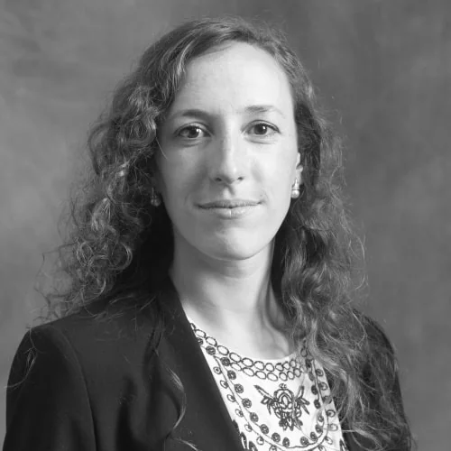
University of Maryland, College Park
Master in Public Policy
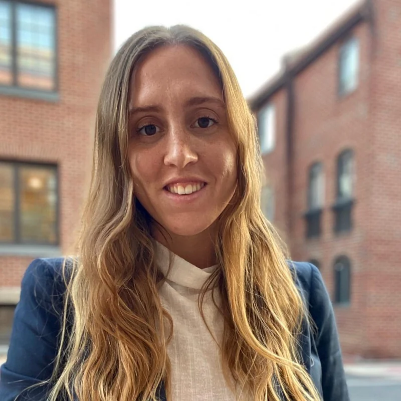
George Washington University
PhD Economics
SPONSORS
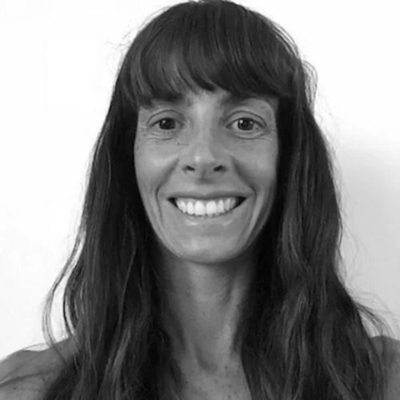
Harvard Medical School
Clinical Investigation
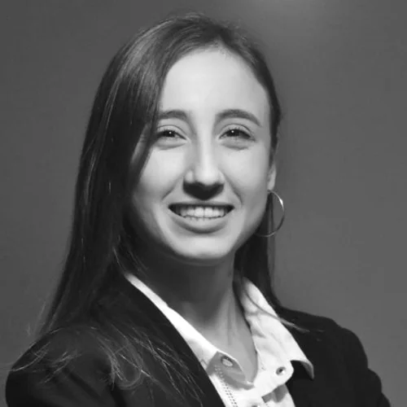
Worcester Polytechnic Institute
MS in Computational Biology
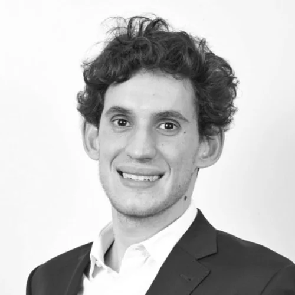
Northwestern University, Kellogg School of Management | MBA
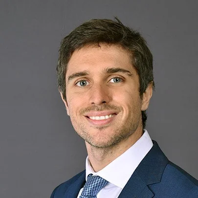
Northwestern University, Kellogg School of Management | MBA
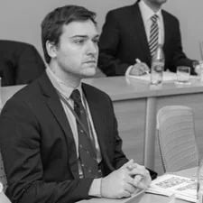
European University Institute
MA Transnational Governance
CONTENIDOS
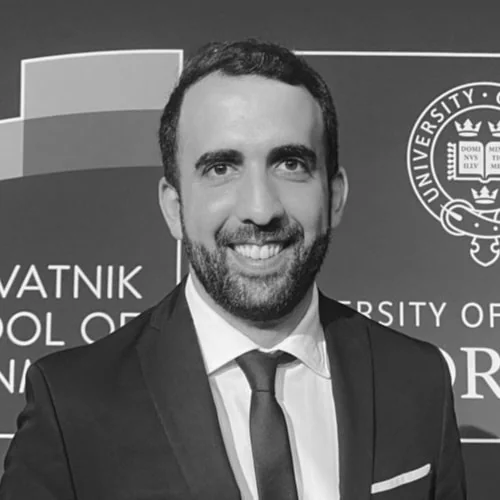
University of Oxford
Master of Public Policy
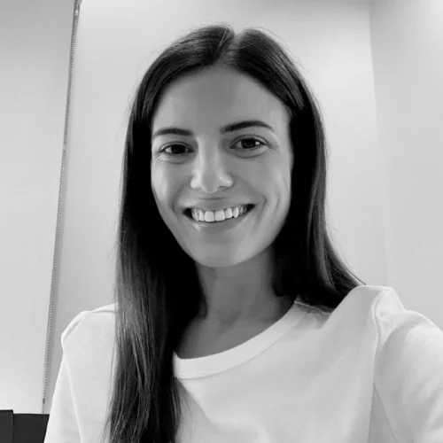
Sciences Po Grenoble | Master en Études Internationales et Européennes
MPA-ID
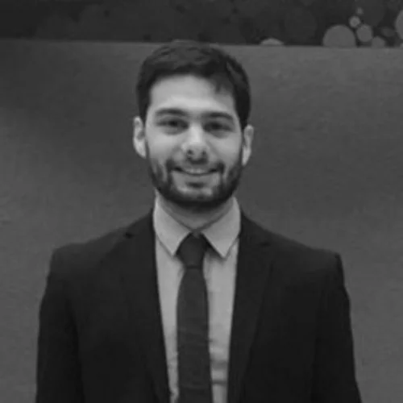
Harvard Kennedy School
MPA-ID
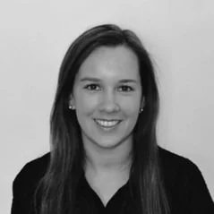
Harvard Kennedy School
MPA-ID
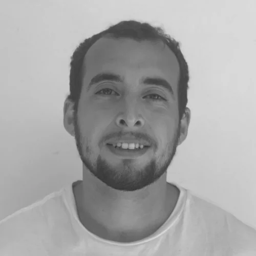
George Mason University
MA in Economics
University of Chicago, Booth School of Business | MBA
MARKETING
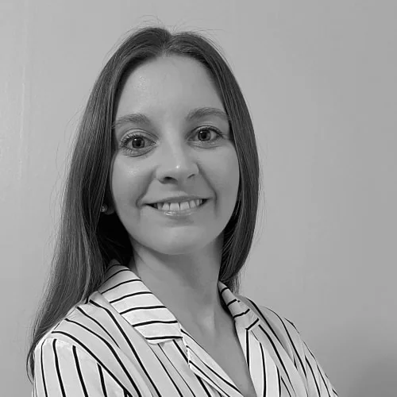
Worcester Polytechnic Institute
MS in Management
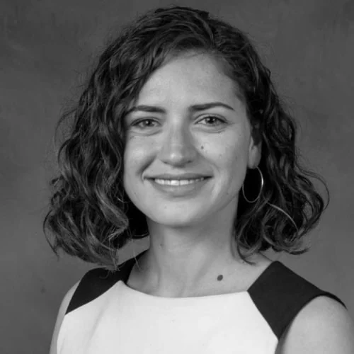
American University
LLM in Human Rights and Humanitarian Law
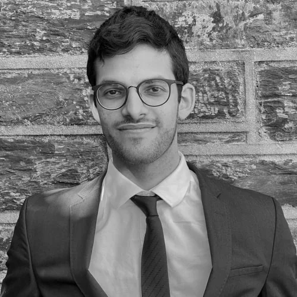
Duke University
Master of Engineering Management
OPERACIONES
University of Chicago, Booth School of Business | MBA
University of Chicago, Booth School of Business | MBA
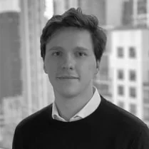
University of Chicago, Booth School of Business | MBA
University of Chicago, Booth School of Business | MBA
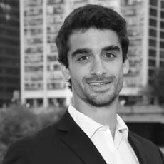
University of Chicago, Booth School of Business | MBA
MBA
MS in Geology
Argentina resiliente
Una edición a distancia dedicada a los consensos y a la adaptación frente a nuevos desafíos. Trabajo, salud, género y tecnología formaron parte de los debates.
- Fecha
- 2021
- Sede
- Encuentro virtual
Argentina resiliente: consensos del presente hacia el futuro
Este año nos encontramos organizando la conferencia virtual “Masters Argentina 2021: Argentina Resiliente”. Esta conferencia nos invita sentarnos a conversar sobre cómo adaptarnos ante los desafíos de la nueva década y cómo aprovechar nuestras fortalezas para alcanzar un desarrollo inclusivo en un contexto complejo.
Nuestras mesas debate tocaran temas tan importantes como el futuro del mercado de trabajo en Argentina, violencia de género y la respuesta del estado, los desafíos de nuestro sistema de Salud y cómo aplicar nuevas tecnologías para potenciar el crecimiento del país.
Entendemos que la Argentina es nuestro proyecto en común y su desarrollo nuestro gran desafío. Como estudiantes y profesionales, este es el compromiso que nos impulsa a formarnos con responsabilidad y seriedad, con la mirada puesta en el mundo y el corazón en la Argentina.
¡Los esperamos!
Equipo
EQUIPO
COORDINACIÓN GENERAL
Purdue University - M.S. in Engineering Management ‘20
SPONSORS
Sciences ‘21
CONTENIDOS
Cornell University - MPA ‘21
Columbia University - MPA in Economic Policy Management '21
King's College London - Master of Law in Intellectual Property and IT '21
Agustín Chiarella
MARKETING
Syracuse University - Educational Leadership '21
University of Warwick - MSc in Behavioral and Economic Science '21
Harvard University - MPA '22
OPERACIONES
Babson College– MBA ‘21
Purdue University - MA Computer and
Information Technology '21
University of Pennsylvania - Social Policy and Data Analytics '21
Sponsors
Masters Argentina Conecta
La conferencia presencial prevista para Chicago se canceló por el COVID-19. En su lugar, el ciclo Conecta abrió conversaciones virtuales y acompañó la iniciativa solidaria #SeamosUno.
- Ciclo virtual
- Junio y julio de 2020
- Formato
- Ciclo solidario de cinco webinars
La conferencia presencial de 2020 fue cancelada por la pandemia.

Imágenes y videos de la edición
Sponsors

Master argentina conecta
PRESENTAMOS UNA NUEVA INICIATIVA

Durante junio y julio de 2020 realizamos una serie de 5 webinars con destacados oradores. Gracias al aporte de los asistentes y las empresas que nos auspiciaron, pudimos donar alimentos y productos de higiene a cientos de familias a través de #SeamosUno.
Ver video acá
Primer webinar

Segundo webinar

Tercer webinar

Cuarto webinar

Quinto webinar

Capital humano para la Argentina del futuro
Educación, innovación, ciencia, finanzas y energía: distintas miradas sobre el papel de las personas en el desarrollo del país.
- Fecha
- 12 al 14 de abril de 2019
- Sede
- Embajada Argentina
Agenda
CAPITAL HUMANO PARA LA ARGENTINA DEL FUTURO
VIERNES 12 DE ABRIL
SÁBADO 13 DE ABRIL
Embajador Argentino en los EEUU
Ministro de Educación, Cultura, Ciencia y Tecnología de la Nación
Presidente de Tenaris Cono Sur
CTO North America & EMEA de Globant
Managing Partner North America de Wolox
Director Senior, Customer Experience de Mercado Libre
General Manager de UBER Cono Sur
Fundador de Surfing Tsunamis
Fundador de Cmax
Ex Ministro de Hacienda y Finanzas Públicas de la Nación
Gerente General de Lartirigoyen
CEO de Cresud
Directora Creativa de Uninterrupted (Fundada por LeBron James y Maverick Carter)
Doctor en física y músico
Físico, ganador de la Medalla Lorentz
Gerente de Recursos Humanos de Grupo Supervielle
Fundador de Nubi
Economista Jefe y Gerente de Comunicaciones Corporativas de Santander Río
CEO Banco del Sol (Sancor Seguros)
Presidente de YPF
G20 Finance Deputy
Policy Sherpa B20 Argentina
Secretario General y de Relaciones Internacionales GCBA
CEO del Grupo Aerolíneas Argentinas
Ministra de Seguridad de la Nación
DOMINGO 14 DE ABRIL
Sponsors


Lugares
RECEPCIÓN
DE BIENVENIDA
Viernes 12 de abril
Embajada de Argentina en USA
1600 New Hampshire Ave NW, Washington, DC
CENA
Sábado 13 de abril
Spirit of Washington - Dinner Cruise
580 Water Street SW, Washington D.C.
Equipo
EQUIPO
COORDINACIÓN GENERAL
University of Chicago Booth School of Business - MBA ‘19
School of International and Public Affairs, Columbia University - MPA ‘19
SPONSORS
University of Chicago Booth School of Business - MBA ‘20
Harvard Business School -
MBA ‘20
Cornell Law School - LLM ‘19
Cornell Institute for Public Affairs - MPA ‘20
Kellogg School of Management - MBA ‘19
CONTENIDOS
MIT Sloan School of Management - MBA ‘20
School of International and Public Affairs, Columbia University - MPA ‘20
Harvard Kennedy School -
Econ PhD ‘19
London Business School -
MBA ‘20
MIT Sloan School of Management - MBA ‘20
DIFUSIÓN
The Wharton School - MBA ‘20
London Business School -
MBA ‘20
School of International and Public Affairs, Columbia Univ. - MPA-DP ‘20
OPERACIONES
School of Public Affairs at American University - MPP ‘20
School of Public Affairs at American University - MPP ‘20
IESE Business School - MBA ‘20
DELEGADOS
Notre Dame - Agustin TaussigNYU - Milagros IbarzabalOxford - Martín MerelloStanford - Erick FuksU Texas - Avelino RolonUIUC Illinois Urbana-Champaign - Marcos FeoleUniversity of Colorado Boulder - Joaquin SoharesUniversity of Florida - Clara Emilia MossoUniversity of Maryland - Julián AstarloaUniversity of Virginia - Fay, Eduardo (Teddy)UPenn - Laura VarelaUPenn - Mauro ValenteYale - Rodriguez Taylor, Camila North Carolina State University - María Cecilia Ginés
Galeria de fotos
GALERIA DE FOTOS
Ver video acá
Competitividad y nuestro lugar en el mundo
Una edición centrada en los desafíos para competir: emprender, producir, innovar y construir políticas que acompañen el desarrollo.
- Fecha
- 13 al 15 de abril de 2018
- Sede
- University of Chicago
Agenda
Argentina: Competitividad y nuestro lugar en el mundo
KEYNOTE SPEAKER:
Argentina, nuestro rol en un mundo cambianteSergio PÉREZ GUNELLA, Ministro Consejero de la Embajada Argentina en EE.UU.
PANEL 1:
Emprendedurismo, el futuro de nuestra competitividadAgustina FAINGUERSCH, Partner Wolox y Co-founder MuziAlejandro COSENTINO, Founder AfluentaManuel TANOIRA, Co-autor Ley de Emprendedores en ArgentinaNicolás TEJERINA, Founder y CEO Navent Modera: Tomás ALLENDE, Partner Beccar Varela
KEYNOTE SPEAKER:
Tecnología, competir contra los más grandesSean SUMMERS, SVP Marketplace de MercadoLibreEntrevista: Tomás ALLENDE, Partner Beccar Varela
PANEL 2:
Multinacionales, ¿Cuáles son los desafíos para ser más eficientes?Martín BERARDI, CEO Ternium Argentina, Grupo TechintAlexia KEGLEVICH, CEO Assist-CardMiguel Ángel PEIRANO, CEO Coca-Cola AndinaLuis RAMÍREZ ROJAS, CEO ScaniaModera: Francisco ORTEGA, Managing Partner de McKinsey & Co.
SPEAKER SERIES:
Descifrando a Einstein, mirando el universo con nuevos ojosGabriela GONZÁLEZ, Miembro Proyecto LIGO Ganador Premio Nobel Física
PANEL 3:
Infraestructura, Energía y Agro, herramientas para alcanzar nuestro potencialJosé Manuel AGGIO, VP Recursos Humanos YPF
Pablo BERECIARTUA, Secretario de Infraestructura y Política Hídrica de la NaciónIgnacio LARTIRIGOYEN, Presidente Lartirigoyen & Cía y Director de Bioceres S.A.
Carlos ORMACHEA, CEO Tecpetrol, Grupo TechintMartín PASMAN, Presidente Valmont Industries de ArgentinaModera: Federico EISNER, Director de Bain & Company
SPEAKER SERIES:
Invertir en Argentina siendo extranjero, ¿Odisea o desafío? El caso de la aerolínea low-cost
Julián COOK, CEO Flybondi
SPEAKER SERIES:
Científicos Argentinos, más allá de nuestro mundoMiguel SAN MARTÍN, JPL NASA, Mars 2020 y Curiosity Project
PANEL 4:
Estado y Sociedad, políticas necesarias para el desarrolloErnesto STEIN, Economista Principal en el Departamento de Investigación del BID
Modera: Silvina STERIN PENSEL, Periodista. Corresponsal Todo Noticias /Canal 13 en USA
KEYNOTE SPEAKER:
Política, propuestas para ser más competitivosSergio MASSA, Dirigente Frente Renovador y Ex-Candidato a Presidente de la NaciónEntrevista: Alicia MENÉNDEZ, Research Associate, Associate Professor, The University of Chicago Harris School of Public Policy
Sponsors


Lugares
RECEPCIÓN
DE BIENVENIDA
Viernes 13 de abril
Grand Staircase, Art Institute of Chicago
111 S Michigan Avenue, Chicago
CONFERENCIA
Sábado 14 de abril
Max Palevsky Cinema, Ida Noyes, University of Chicago. 1212 East 59th Street, Chicago
CENA
Sábado 14 de abril
99th floor, Willis Tower- Skydeck
233 S Wacker Dr, Chicago
ASADO
DE DESPEDIDA
Domingo 15 de abril
Main Quadrangle, University of Chicago
1100 E 58th St, Chicago
Equipo

Construyendo Argentina
La pregunta por el compromiso de cada uno reunió conversaciones sobre liderazgo, sectores productivos y políticas de Estado.
- Fecha
- 21 al 23 de abril de 2017
- Sede
- MIT · Harvard

Imágenes y videos de la edición
Agenda
Construyendo Argentina,
¿cuál es el compromiso de cada uno?
KEYNOTE SPEAKER:
Argentina, ¿dónde estamos y hacia dónde vamos?

LOUSTEAU
Ex-Embajador argentino en Estados Unidos y referente de Energía Ciudadana Organizada (ECO)
PANEL 1:
Empresariado y desarrollo, ¿cuál es el rol y los desafíos?


GUTIERREZ
Presidente de YPF
MARTINEZ ÁLVAREZ
Director General de Tenaris Cono Sur
MARTINO
Presidente de HSBC Argentina

Federico EISNER
Managing Partner de Bain & Company, Argentina
PANEL 2:
Sectores económicos, ¿cómo alcanzar nuestro máximo potencial?

ELSZTAIN
Vicepresidente II de IRSA, CEO de Cresud y CEO de IRSA Commercial Properties

GROBOCOPATEL
Chairman del Grupo Los Grobo

RUBINSTEIN
CEO de OLX Latinoamérica

Gustavo NIEPONICE
Partner y Manager Director de The Boston Consulting Group, Argentina
EXPERIENCIAS DE LIDERAZGO:
¿Quiero ser líder?

COSTANTINI
Ex-Presidente de Aerolíneas Argentinas y General Motors
La odisea de liderar la animación en Argentina

GORALI
Co-Fundador y Productor Ejecutivo de Mundoloco CGI Producto de Metegol
¿Cómo generar un equipo ganador?

VIGIL
Entrenador de Hockey, Coach Ontológico y Speaker Motivacional
PANEL 3:
Políticas de estado, ¿en qué estamos todos de acuerdo?


BOSSIO
Diputado Nacional por la Provincia de Buenos Aires (Partido Justicialista)
OCAÑA
Legisladora de la Ciudad Autónoma de Buenos Aires (Confianza Pública)
RECALDE
Diputado Nacional por la Pcia. de Buenos Aires (Presidente del Bloque Frente para la Victoria - PJ)

Francisco ORTEGA
Senior Partner y Manager Partner de McKinsey & Company, Argentina
KEYNOTE SPEAKER:
Los desafíos del desarrollo argentino

HAUSMANN
Director del Center for International Development (CID) y Profesor de Desarrollo Internacional en la Kennedy School of Government (HKS)
PANEL 4:
Construyendo Argentina, ¿cuál es el modelo?

ARROYO
Director del Banco Provincia y referente del Frente Renovador (FR)

IBARRA
Ministro de Modernización de la Nación

LEVY YEYATI
Decano de la Escuela de Gobierno de UTDT y Coordinador del Consejo Presidencial Argentina 2030

Ivan WERNING
Profesor del Departamento de Economía de MIT
Sponsors


Lugares

RECEPCIÓN
DE BIENVENIDA
Viernes 21 de abril
MIT Management Sloan School
30 Memorial Dr, Cambridge

CONFERENCIA
Sábado 22 de abril
The Stata Center
Building 32, 32 Vassar St., Cambridge

CENA
EN CRUCERO
Sábado 22 de abril
Odyssey Cruises Boston
200 Seaport Blvd, Boston

ASADO
DE DESPEDIDA
Domingo 23 de abril
Charles River
550 Memorial Dr, Cambridge
Equipo


Argentina: ¿un cambio o un nuevo ciclo?
El comienzo de Masters: debates sobre reformas, inversiones, tecnología y economías regionales, con estudiantes y referentes argentinos.
- Fecha
- 22 al 24 de abril de 2016
- Sede
- Columbia University
Imágenes y videos de la edición
Agenda
ARGENTINA,
¿el principio de un cambio o de un nuevo ciclo?
KEYNOTE SPEAKER:
¿Cuál es el liderazgo que el país necesita?
RODRIGUEZ LARRETA
Jefe de Gobierno de la Ciudad Autónoma de Buenos Aires
PANEL 1:
Reformas y desarrollo: ¿qué hay que hacer distinto?
LOUSTEAU
Embajador argentino en Estados Unidos
CRISTOFANI
Presidente y CEO de Banco Santander Río
BAGÓ
CEO de Laboratorios Bagó Argentina
Guillermo CALVO
Profesor de la Universidad de Columbia
PANEL 2:
Inversiones, ¿cuánto hay que esperar?
MARTINO
CEO de HSBC Argentina
ROTELLA
Managing Director de Goldman Sachs
ALVAREZ DEMALDE
Founding Partner de Riverwood Capital
Ernesto STEIN
Economista Senior del Banco Interamericano de Desarrollo (BID)
PANEL 3:
Empresas de base tecnológica: de locales a regionales... ¿y luego globales?
RUBINSTEIN
CEO de OLX Latinoamérica
DÍAZ IBARRA
Country Marketplace Director de Mercado Libre Argentina, Chile y Perú
TAMER
Co-Fundador y Country Manager de Despegar.com
Andrés ANAVI
The Boston Consulting Group (BCG)
PANEL 4:
Economías regionales y oportunidades del agro: ¿cuáles son los desafíos?
MANZUR
Gobernador de la Provincia de Tucumán
URTUBEY
Vice Presidente de la Unión Industrial Argentina (UIA)
ETCHEVEHERE
Presidente de la Sociedad Rural Argentina (SRA)
PANEL 5:
Argentina, ¿una construcción colectiva?
FRIGERIO
Ministro del Interior y Obras Públicas de la Nación
URTUBEY
Gobernador de la Provincia de Salta
PEROTTI
Senador Nacional por la Provincia de Santa Fe
CLUTTERBUCK
Presidente de la Red de Acción Política (RAP)
Rafael DI TELLA
Profesor de la Harvard Business School (HBS)
Sponsors


Lugares
RECEPCIÓN
DE BIENVENIDA
Viernes 22 de Abril
The Boston Consulting Group
430 Park Ave, Nueva York
CONFERENCIA
Sábado 23 de Abril
Italian Academy, Universidad Columbia
1161 Amsterdam Ave, Nueva York
CENA
EN CRUCERO
Sábado 23 de Abril
Pier 15
78 South St., Nueva York
ASADO
DE DESPEDIDA
Domingo 24 de Abril
Revson Plaza, Universidad de Columbia
Amsterdam Ave. y 116th., New York